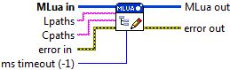

Connector Pane

Set Package Paths
Set the paths to search for Lua and C modules, see http://www.lua.org/manual/5.2/manual.html#pdf-package.searchpath for further details.
Parameter(s)
-----------------
- MLua in: Reference to the MLua instance.
- Lpaths: A semi-colon seperated list of possible paths to Lua script modules.
- Cpaths: A semi-colon seperated list of possible paths to compiled C modules.
- error in: Describes error conditions that occur before this VI runs. This input provides standard error in functionality.
- MLua out: Reference to the MLua instance.
- error out: Contains error information. This output provides standard error out functionality.